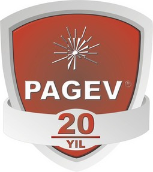

Son Baþvuru Tarihi: 09 Ekim 2009
Ödül Töreni: 19 Ekim 2009
Türk plastik sektörünün uluslararasý alanda rekabetçi bir yapýya sahip olmasý için yeni teknolojilerin geliþtirilmesi gerektiðine inanan Türk Plastik Sanayicileri Araþtýrma, Geliþtirme ve Eðitim Vakfý (PAGEV) tarafýndan hayata geçirilen "PAGEV Plastik Teknoloji Ödülleri" için baþvurular baþladý.
PAGEV, bu yýl beþincisi düzenlenen ödül programý ile Türk plastik sanayinin tüm dallarýnda yenilik ve mükemmelliði yaymayý, plastik ürünlerinin araþtýrýlmasýnda ve geliþtirilmesinde etkin rol oynayan sanayicileri, kurumlarý, profesyonelleri, araþtýrmacýlarý ve öðrencileri teþvik etmeyi hedefliyor.
Gönderilen çalýþmalar ürün, plastik iþleme teknolojisi, malzeme, yeniden iþleme teknolojisi, araþtýrma, öðrenci projesi ve patent olmak üzere yedi farklý kategoride deðerlendirilecek. PAGEV Teknoloji Ödülleri’ne katýlan projelerin eþsizlik, yenilikçilik, tasarým, malzemelerin stratejik kullanýmý, imalat ve kullanýmda güvenlik, iþlevsel kolaylýk, geleneksel malzemelerin yerini alma, enerji tasarrufu, yeniden iþlenebilirlik ve çevre dostu olma kriterlerinden en az birine sahip olmasý gerekiyor.
Her kategoride üç ödülün verileceði ödül programýnda, eserler yedi kiþilik bir jüri tarafýndan deðerlendirilecek. Her dalda birinci olan yarýþmacýlar, 2010 yýlýnda PAGEV’in katýldýðý uluslararasý plastik fuarlarýndan birine götürülecek. Patent dalýnda birinciliðe hak kazanan yarýþmacý ise TÜYAP tarafýndan 2 bin Euro ile ödüllendirilecek. Ayrýca tüm kategorilerde 2 mansiyon ödülü de bulunuyor.
Ödül alan çalýþmalar, PlastEurasia Ýstanbul 2009 Fuarý’nda kurulacak olan PAGEV standýnda sergilenme þansýna sahip olacak. Son baþvuru tarihi 9 Ekim 2009 olan yarýþmada dereceye girenlerin ödülleri, 19 Kasým 2009 tarihinde yapýlacak tören ile daðýtýlacak.
PAGEV Plastik Teknoloji Ödülleri Yarýþmasý - 2009
1. Ödül verilecek kategoriler:
Bu yarýþmada ödül verilecek konular 7 ana baslýk altýnda belirlenmiþtir;
- Ürün
- Plastik iþleme teknolojisi
- Malzeme
- Yenden iþleme teknolojisi,
- Arastýrma
- Ögrenci projesi
- Patent
2. Ödül verilecek kategorilerin kýsa açýklamalarý:
- Ürün (Ambalaj, inþaat, otomotiv, beyaz eþya, Elektrik ve elektronik cihazlar, kiþisel bakým ürünleri, Spor malzemeleri, eðlence ürünleri, tarým, týbbi ürünler, güvenlik malzemeleri vs.)
- Plastik Ýþleme Teknolojisi (ön isleme, isleme son isleme, yardýmcý ekipmanlar, kalýplar vs.)
- Malzeme (Polimerler, Bileþikler, Karýþýmlar, Alaþýmlar, Masterbatch, Katký Maddeleri vs.)
- Yeniden Ýþleme Teknolojisi
- Araþtýrma (Polimer Bilimi, Teknoloji, Mühendislik vs.) haber olma niteliðini taþýyan özgün ürünler)
- Öðrenci Projesi (tüm kategorilerde proje, bitirme ödevi veya tezlerin özeti olarak hazýrlanan makaleler)
- Patent (Patent almýþ, pratik kullanma sansý olan, endüstride kabul görmüþ, basýnda haber olma niteliðini taþýyan özgün ürünler)
3. Yarýþmaya katýlacak kiþi ve kurumlarda aranacak kriterler:
- Türk plastik sektöründe faaliyet gösteren kurumlar ile þirketler, bireyler, araþtýrma ve geliþtirme kurumlarý, sivil toplum örgütleri, akademi kuruluþlar ve profesyoneller yarýþmaya katýlabilir.
- Tüm katýlýmcýlarýn Türkiye Cumhuriyeti vatandaþý olmasý gerekmektedir.
- Jüri üyeleri, PAGEV Yönetmenler Kurulu Üyeleri ve PAGDER Yönetim Kurulu Üyeleri
ile temsil ettikleri kurum ve çalýþanlarý ve PAGEV çalýþanlarý yarýþmaya katýlamaz.
4. Yarýþmaya katýlacak ürün veya projelerde aranacak kriterler:
- Tüm kategorilerdeki baþvurular için T.C. hudutlarý içinde gerçekleþtirilmiþ olma þartý
aranacaktýr.
- Yarýþmaya katýlan ürünler, ya yapý olarak tamamen plastik olmalý, ya da ürünün
tasarýmý veya performansý için kritik olan plastik bileþenlerini içermelidir.
- Yarýþmaya giren ürün veya tasarým; plastiðin eþsiz özelliklerini yenilikçi bir þekilde
kullanmalýdýr.
- 5. ve 6. kategoriler dýþýndaki tüm baþvurular, yarýþmanýn baþlangýç tarihi
itibariyle en azýndan son üç aydýr ticari amaçla imal edilmiþ olmalýdýr.
- 5. ve 6. kategorilerdeki çalýþmalar, son 2 yýl içinde yapýlmýþ olmalýdýr.
- Yarýþmaya katýlan baþvurular, aþaðýdaki temel kriterlerden en az birine dayanmalýdýr;
- Eþsizlik
- Yenilikçilik
- Tasarým
- Malzemelerin Stratejik Kullanýmý
- Ýmalat ve Kullanýmda Güvenlik
- Ýþlevsel Kolaylýk
- Geleneksel Malzemelerin Yerini Alma
- Enerji Tasarrufu
- Yeniden Ýþlenebilirlik
- Çevre Dostu Olma
5. Jüri:
Yarýþma; bir PAGEV Yönetmenler Kurulunun ilgili komite üyelerinden oluþan ve gerektiðinde
plastik sektöründe uzmanlýða sahip, akademisyen, araþtýrmacý, sanayici ve
profesyonellerden de destek alýnarak geniþletilebilecek en az 7 kiþilik bir jüri heyeti
tarafýndan deðerlendirilecektir. Jürinin kararý kesin ve baðlayýcýdýr.
6. Verilecek ödüller:
Her kategoride 3 ödül verilebilecektir;
Birincilik Ödülü
Her dalda birinci olan yarýþmacýlara plaket verilecek ve ulaþým ve konaklama giderleri
PAGEV tarafýndan karþýlanmak üzere, 2010 yýlýnda PAGEV / PAGDER’in iþtirak ettiði ve
sektörel gezi düzenlediði Uluslararasý Plastik Fuarlarýndan birine götürüleceklerdir. PATENT
dalýnda birinciliðe hak kazanan yarýþmacýya ise TUYAP - Tüm Fuarcýlýk Yapým A.Þ. tarafýndan 2.000 Euro ödül verilecektir. Paten ödülü, doðrudan tasarýmý gerçekleþtiren
kiþiye verilecektir. Ancak, ödülün hukuki sahibi þirket ise, bu tüzel kiþilik de bir þilt ile
onurlandýrýlacaktýr.
Her kategoride en çok 2 mansiyon ödülü (plaket) verilecektir.
Her kategoride ödül alan yarýþmacýlar PAGEV Dergisinde ilan edilecek ve ödül
alan ürünler; PlastEuroasia Ýstanbul 2009 Fuarýnda PAGEV standýnda
sergilenecektir.
7. Müracaat:
Yarýþmaya katýlacak (öðretim üyesi ve öðrenciler dýþýndaki) kiþi, firma ve kurumlar Garanti
Bankasý Sefaköy Þubesi (Sb. Kodu: 432) 6200 664 no’lu PAGEV hesabýna 100TL
yatýrmalý ve ekteki müracaat formunu doldurup ekleri ve banka dekontu ile birlikte en geç 9
Ekim 2009 Cuma aksamý saat 16:00‘a kadar aþaðýdaki adrese teslim etmelidir;
PAGEV – Türk Plastik Sanayicileri Araþtýrma, Geliþtirme ve Eðitim Vakfý
Halkalý Cad., No:132/1 Kat:4 Sefaköy Ýstanbul
Tel: (212) 425 13 13
e-posta: pagev@pagev.org.tr
Yarýþma takvimi
- En son müracaat tarihi: 9 Ekim 2009
- Jüri degerlendirmesi: 2 Kasým 2009
- Ödül kazananlara duyuru: 6 Kasým 2009
- Ödül töreni: 19 Kasým 2009
8. Müracaat formuna eklenecek ilave bilgiler:
Basvurunuzun asagýdaki alanlarda yaptýgý belirgin katkýlar konusunda kýsa açýklamalar
yapýlacaktýr;
- Estetik (sýradýþý bir tasarýmý, yüzeyi, hissediliþi vs. var mý?)
- Maliyet Avantajlarý (daha iyi çevrim süresi, geleneksel malzemelerin yerini alma,
yeni proses vs. gibi alanlarda maliyet avantajlarý saðlýyor mu?)
- Çevre/Enerji Koruma (proseste, geleneksel malzemelerin yerini almada, yeniden
isleme kolaylýðýnda vs. enerji tasarrufu saðlýyor mu?)
- Ýþ Fýrsatlarý (yeni is fýrsatlarý saðladý mý? Yeni müþteri, yeni dýþ pazar vs.)
- Ýþlevsellik (kullanýcý açýsýndan uygulamada ne gibi kolaylýklar saðladý?)
- Baþka özel nitelikler. Fotoðraflar / Slaytlar / Teknik Çizimler
- Varsa numuneleri
Not: Baþvuru dokümanlarý ve numuneleri geri iade edilmeyecektir.
Ödüllere dair detaylý bilgi almak ve baþvuru formuna ulaþmak için lütfen týklayýnýz;
www.pagev.org.tr/contents.asp?a=370&b=4
|